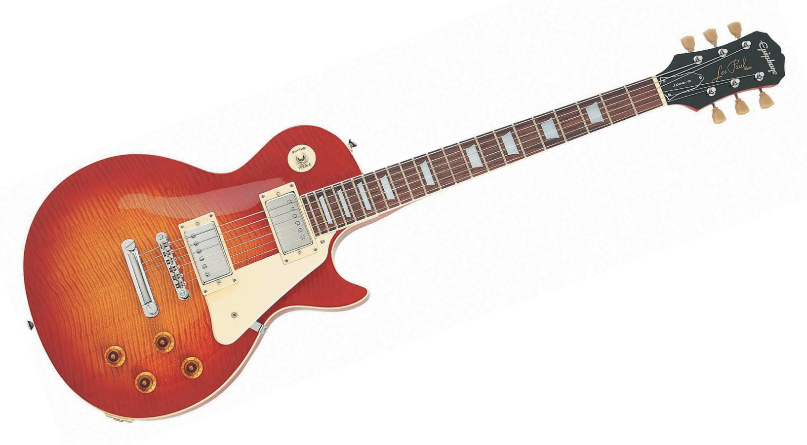

Epiphone Les Paul Special II LTD Electric Guitar
Epiphone's number one selling model LP Special II is a great way for beginners to get started on guitar while getting the feel and tone of a Les Paul. Seasoned pros also love the Special II because it's a great-sounding workhorse of a guitar that allows them to leave their more expensive axes at home.
Epiphone Les Paul Specifications:
o Body: Mahogany
o Neck: Mahogany
o Neck Shape: 1960s SlimTaper™ “D” Profile
o Neck Joint: Bolt-on
o Scale length: 24.75”
o Fingerboard: Rosewood
o Fingerboard Radius: 12”
o Nut Width: 1.68”
o Hardware: Nickel
o Machine Heads: Covered; 14:1 ratio
o Neck Pickup: Epiphone 650R Humbucker
o Bridge Pickup: Epiphone 700T Humbucker
o Controls: 1-volume, 1-tone
o Pickup Selector: 3-way Epiphone toggle
o Bridge: LockTone™ Tune-o-matic
o Tailpiece: LockTone™ Stopbar
o Color: Ebony, Heritage Cherryburst and Vintage Sunburst.